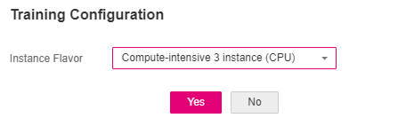

After the data is labeled, train a model to obtain a predictive analytics model. You can publish the model as a real-time inference service.
Procedure
- On the ExeML page, click the name of the project that has been created. The Label Data tab page is displayed. Select the label column and its data type.
- On the Label Data tab page, click Train in the upper right corner. In the displayed Training Configuration dialog box, select an instance flavor used for training and click Yes to start model training.
The training takes a certain period of time. If you close or exit the page, the system continues training until it is complete.
Figure 1 Training configuration
 - On the Train Model tab page, wait until the training status changes from Running to Completed.
- View the training details, such as the label column, data type, accuracy, and evaluation result.
The example is a discrete value of binary classification. For details about the evaluation result parameters, see Table 1.
For details about the evaluation result generated for different data types of label columns, see Evaluation Result Description.

An ExeML project supports multiple rounds of training, and each round generates a version. For example, the first training version is V001 (xxx), and the next version is V002 (xxx). The trained models can be managed based on the training versions. After the trained model meets your requirements, deploy the model as a service.
Evaluation Result Description
- Curve chart
For binary classification problems (discrete values, two optional values at most), the evaluation result has a threshold and is displayed in a curve chart after model training is complete. For details about parameters, see Table 1.
You can click on the right of a curve chart to download the curve chart to a local PC.
Table 1 Evaluation result parameters Parameter
Description
Threshold
A threshold is needed to determine whether the result is negative or positive, because the calculation result of a binary classification model is a value between 0 to 1 (that is, positive probability). A value greater than or equal to the threshold shows that the result is positive. Otherwise, the result is negative. For example, if the value is greater than 0.5 (that is, the positive probability is greater than 50%), the result is positive.
Currently, the default threshold is 0.5. The threshold is used only for model training effect evaluation and cannot be manually set.
True Positive
The model correctly predicts the positive class.
False Positive
The model incorrectly predicts the negative class.
False Negative
The model incorrectly predicts the positive class.
True Negative
The model correctly predicts the negative class.
Recall
Fraction of correctly predicted samples over all samples labeled as a class. It shows the ability that a model recognizes positive samples.
Precision
Fraction of correctly predicted samples over all samples predicted as a class. It shows the ability of a model to distinguish negative samples.
Accuracy
Fraction correctly predicted samples over all samples. It shows the general ability of a model to recognize samples.
F1 Score
Harmonic average of the precision and recall of a model. It is used to evaluate the quality of a model. A high F1 score indicates a good model.
- Confusion matrix
For multiclass classification problems (discrete values, more than two optional values), the evaluation result is displayed in a confusion matrix after model training is complete.
Real shows real values in the evaluation sample. You can move the cursor to the target cell to view a real value and a predicted value. For details about the precision and recall parameters, see Table 1.
- Continuous value evaluation result
The evaluation values are MAE, MSE, and RMSE. The three error values can represent a difference between a real value and a predicted value. During multiple rounds of modeling, a group of error values is generated for each round of modeling. The method of checking whether a model is good is to check whether the three error values become smaller or larger. A smaller error value indicates a better model.